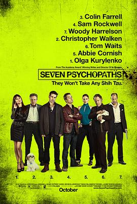

七个神经病 / Seven Psychopaths
又名：疯狗绑票令(台) / 癫狗丧七(港) / 七重人格 / 七个变态 / 七个变态人格
看过的最喜欢的一部……整体结构非常棒！
作品信息
| 导演 | 马丁·麦克唐纳 |
| 编剧 | 马丁·麦克唐纳 |
| 主演 | 科林·法瑞尔 / 山姆·洛克威尔 / 伍迪·哈里森 / 克里斯托弗·沃肯 / 艾比·考尼什 / 海伦娜·马特森 / 迈克尔·斯图巴 / 迈克尔·皮特 / 哈利·迪恩·斯坦顿 / 加布蕾·丝迪贝 / 欧嘉·柯瑞兰寇 |
| 类型 | 喜剧 / 犯罪 |
| 制片国家/地区 | 英国 / 美国 |
| 语言 | 英语 |
| 上映日期 | 2012-10-12(美国) / 2012-12-07(英国) |
| 片长 | 110分钟 |
| IMDb | tt1931533 |
最后一次看到是 2026-08-12T21:13:15+08:00 · 豆瓣原页